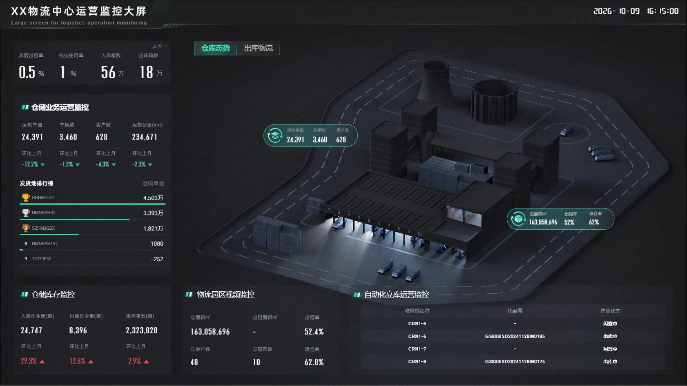
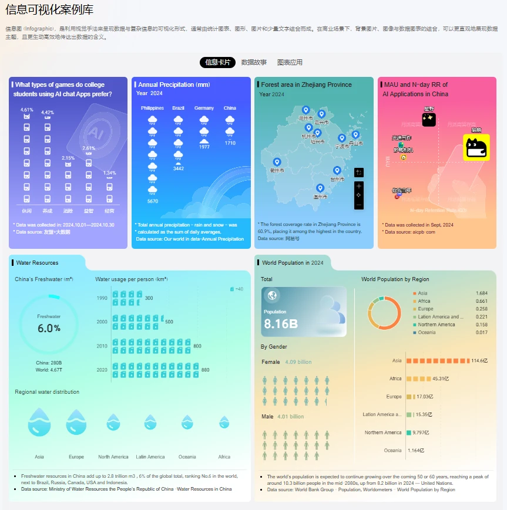
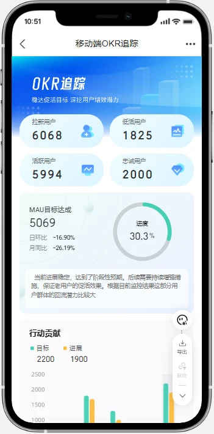
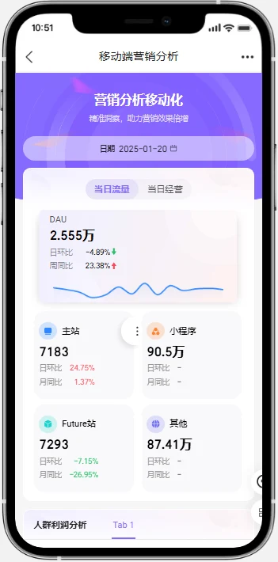
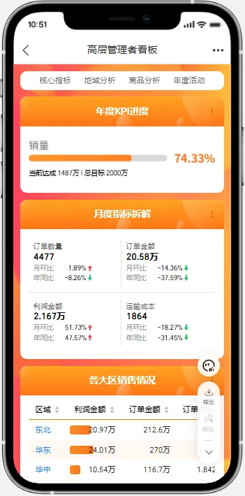
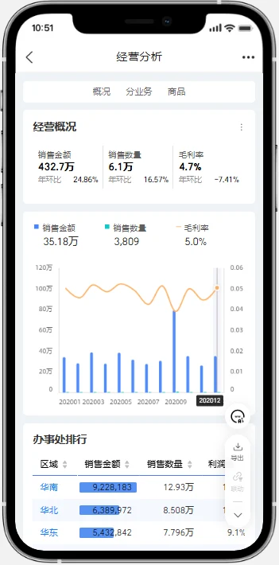
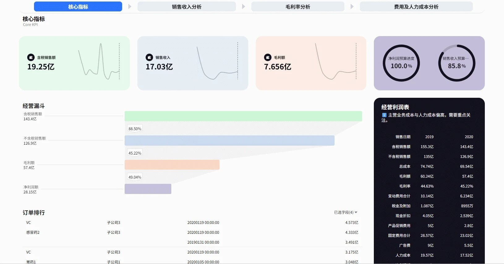
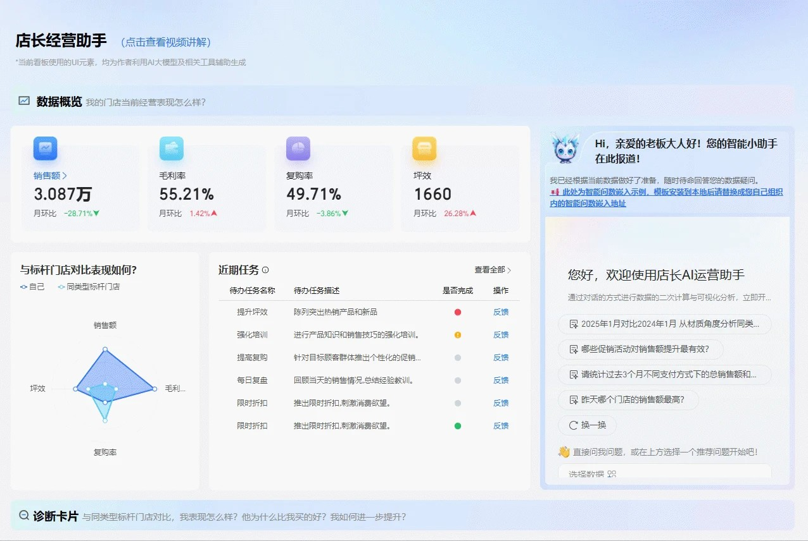
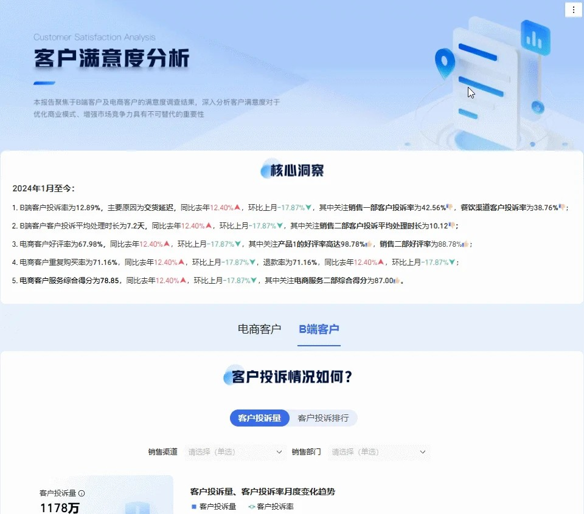

想看业务数据，全靠手工倒 Excel
要看经营数据，只能安排员工到各系统导表、回来拼汇总。- 耗时耗力，一次汇总动辄 3-5 天，数据拿到早已过时
- 口径一改，所有表格推倒重做；版本一多，分不清哪份准
- 人工复制粘贴，易错漏，对数时各部门互相扯皮
- 员工被低价值重复劳动占满，无暇做真正的分析
3-5 天/ 一次月结汇总
多年深入业务一线，拥有丰富的数据开发实战经验
专做企业 数据自动化 与 AI 自然语言问数，让报表自动出、让问数像说话一样简单
随着业务增长、系统增多，传统"手工取数、人工分析"的方式越来越跟不上
两步走：把散落的数据自动化汇聚成一个数据湖，然后在上面用 AI 一句话问数
5 套业务系统的数据自动流转、清洗、汇聚，形成统一数据湖
数据基座搭好、业务数据全部就位后，再叠加 AI 能力 — 无需写代码，用大白话直接问，即刻获得数据、分析与建议。
下面是真实系统的问数过程 — 无需动手，看着就好
AI 自动查数 - 分析 - 回答，无需写 SQL、无需等排期
理解问题、拆解分析维度
从数据仓库实时取数
柱状 / 折线 / 表格自动选
洞察 + 下一步行动
驾驶舱大屏、移动端报表、财务分析、AI 助手 — 真实系统实录，点击即可看动态演示

▶ 视频演示 🔍 点击查看详情3D 仓库 + 业务监控 + 视频联动 — 一个屏管一座仓。
查看案例详情 →
🔍 点击查看详情图表 + 图标 + 地图，把数据讲成故事。
查看案例详情 →



OKR / 营销 / 高层看板 / 经营分析 — 手机里随时看。
查看案例详情 →
▶ 视频演示 🔍 点击查看详情核心指标 + 经营漏斗 + 利润表，财务口径一页看清。
查看案例详情 →
▶ 视频演示 🔍 点击查看详情数据概览 + 标杆对比 + AI 答疑，店长随身带。
查看案例详情 →
▶ 视频演示 🔍 点击查看详情投诉/好评/满意度，全链路归因分析。
查看案例详情 →明确的三段式交付 — 每段都有清晰成果
数仓 + ETL + 任务调度，让数据自动流转、自动计算
仪表板 + 驾驶舱 + 移动端，让数据看得见、用得着
ChatBI 问数 + AI 智能体，让数据会说话、能行动
首次沟通免费 — 告诉我们您的行业与规模，给您更精准的方案与报价
多年深入业务一线，拥有丰富的数据开发实战经验
专做企业 数据自动化 与 AI 自然语言问数，让报表自动出、让问数像说话一样简单
随着业务增长、系统增多，传统"手工取数、人工分析"的方式越来越跟不上
两步走：把散落的数据自动化汇聚成一个数据湖，然后在上面用 AI 一句话问数
5 套业务系统的数据自动流转、清洗、汇聚，形成统一数据湖
数据基座搭好、业务数据全部就位后，再叠加 AI 能力 — 无需写代码，用大白话直接问，即刻获得数据、分析与建议。
下面是真实系统的问数过程 — 无需动手，看着就好
AI 自动查数 - 分析 - 回答，无需写 SQL、无需等排期
理解问题、拆解分析维度
从数据仓库实时取数
柱状 / 折线 / 表格自动选
洞察 + 下一步行动
驾驶舱大屏、移动端报表、财务分析、AI 助手 — 真实系统实录，点击即可看动态演示
3D 仓库 + 业务监控 + 视频联动 — 一个屏管一座仓。
查看案例详情 →图表 + 图标 + 地图，把数据讲成故事。
查看案例详情 →OKR / 营销 / 高层看板 / 经营分析 — 手机里随时看。
查看案例详情 →核心指标 + 经营漏斗 + 利润表，财务口径一页看清。
查看案例详情 →数据概览 + 标杆对比 + AI 答疑，店长随身带。
查看案例详情 →投诉/好评/满意度，全链路归因分析。
查看案例详情 →明确的三段式交付 — 每段都有清晰成果
数仓 + ETL + 任务调度，让数据自动流转、自动计算
仪表板 + 驾驶舱 + 移动端，让数据看得见、用得着
ChatBI 问数 + AI 智能体，让数据会说话、能行动
首次沟通免费 — 告诉我们您的行业与规模，给您更精准的方案与报价